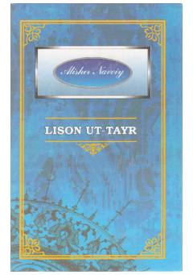

LUQushlarning Simurg'ni izlab yetti vodiy bo'ylab qilgan ramziy va tasavvufiy sayohati haqidagi doston.
Alisher Navoiyning ushbu asari Farididdin Attorning 'Mantiq ut-tayr' dostoniga javoban yozilgan ramziy-tasavvufiy asardir. Kitobda qushlarning Hudhud boshchiligida yetti vodiyni bosib o'tib, Simurg'ni izlashi orqali insonning ma'naviy yuksalish yo'li tasvirlangan.